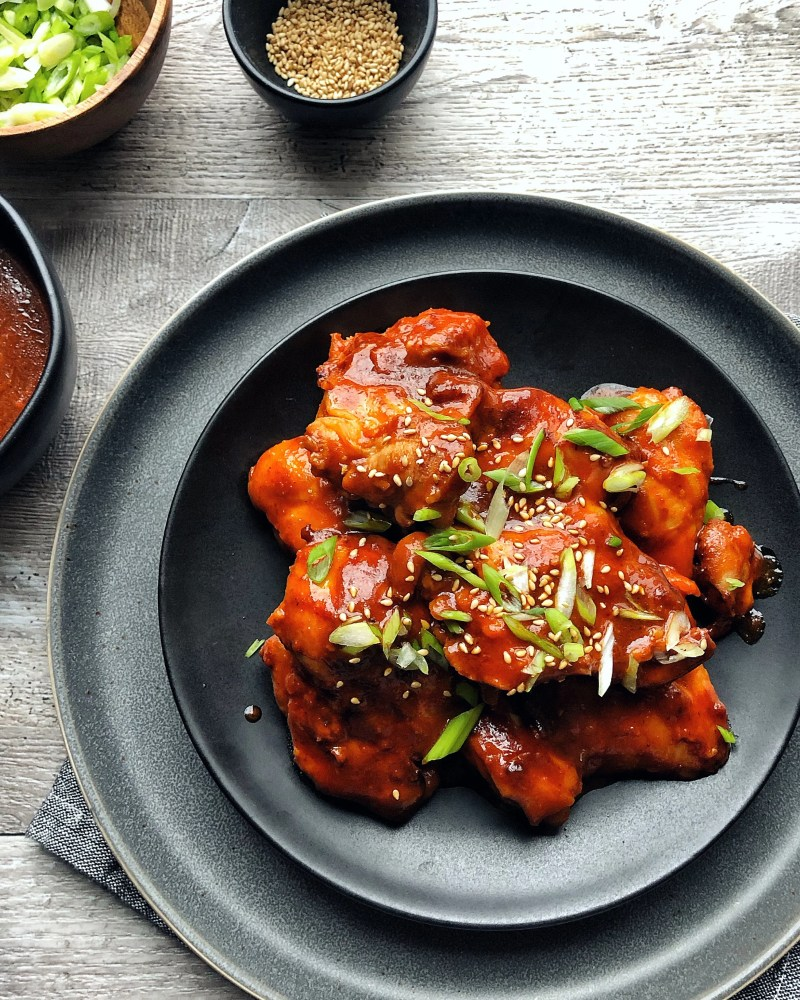

Sweet and Spicy Chiken

Description
Sweet and sour gochujang chicken is a quick wok dish featuring Korean flavors. Serve over rice.
Incredients
- Gochujang
- Soy Sauce
- Mirin
- Honey
- Garlic
- Sesame Oil
- Ginger
- Canola Oil
- Chiken
- Rice
Steps
- Make the sauce in a bowl and cook the chicken in a wok.
- Add the sauce to the wok (with the chicken) and cook until thick and bubbly.
- Garnish and serve over rice.